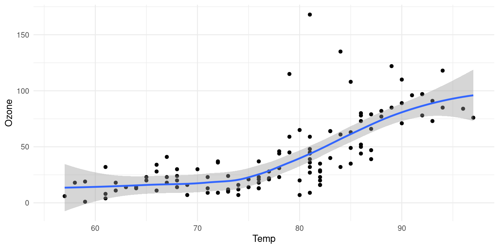

Introduction
The focus of this course is int the programming and basic techniques for inference that are usually applied in data science. We start by reviewing and enforcing programming skills. Then we will use the database of entomological data practice and build the required bases for more structured tools like bootstrap or Jackknife cuts.
Figure fig-airquality further explores the impact of temperature on ozone level.
We also want to cover the fundamentals of a common Data Analyst hast to know according to the DataCamp’s rubrics at the current date (March-01, 2023).
Rubrics for a Data Analyst (Associate and professional)
| Topics | Competnecy | Sufficeint | Insufficent |
|---|---|---|---|
| Data Validation | Assess data quality and perform validation tasks | Has validated all variables against provided criteria and where necessary has performed cleaning tasks to result in analysis-ready data | Has not conducted all the required checks and/or has not cleaned the data. May have removed data rather than performed cleaning tasks |
| Data Visualization | Create data visualizations to demonstrate the characteristics of data and represent relationships between features | Has created at least two different visualizations of single variables (e.g. histogram, bar chart, single boxplot) Has created at least one visualization including two or more variables (e.g. scatterplot, filled bar chart, multiple boxplots) Has used visualizations that support the findings being presented | Has used the same visualization throughout Has not included graphics to represent single variables and relationships Has not used visualizations that support the findings being presented |
| Communication | Presents data concepts to small, diverse audiences | For each analysis step, has explained their findings and/or the reasoning for selecting approaches | Has not provided a summary for each step (data validation, exploratory analysis) |
| Topics | Competency | Sufficient | Insufficient |
|---|---|---|---|
| Data Validation | Assess data quality and perform validation tasks | Has validated all variables and where necessary has performed cleaning tasks to result in analysis-ready data | Has not conducted all the required checks and/or has not cleaned the data. May have removed data rather than performed cleaning tasks |
| Data Visualization | Create data visualizations to demonstrate the characteristics of data and represent relationships between features | Has created at least two different visualizations of single variables (e.g. histogram, bar chart, single boxplot) Has created at least one visualization including two or more variables (e.g. scatterplot, filled barchart, multiple boxplots) Has used visualizations that support the findings being presented | Has used the same visualization throughout Has not included graphics to represent single variables and relationships Has not used visualizations that support the findings being presented |
| Business Focus | Collects relevant information, detects patterns, observes and interprets data | Has described at least one of the business goals of the project Has explained how their work has addressed the business problem Has provided at least one recommendation for future action to be taken based on the outcome of the work done | Has not identified any business goals Has not explained how their work has addressed the business problem Has not provided any recommendations for future actions |
| Business Metrics | Benchmarks, monitors, and evaluates business processes | Has defined a metric that can be used by the business in the future to measure success in solving the problem Has evaluated the metric using the existing data to provide a baseline measure for the problem | Has not identified a metric to compare the model performance to the business problem or has not shown the metric with the current data |
| Communication | Employs multiple tactics (written and verbal) to communicate to business leaders | For each analysis step, has provided a written explanation of their findings and/or reasoning for selecting approaches Has delivered a verbal presentation addressing the business goals, outcomes and recommendations | Has not provided a written summary for each step Has not delivered a verbal presentation |
The tidyverse
We need to install a R package. The majority of the packages that we will use are part of the so-called tidyverse package. The packages in the tidyverse share a common philosophy of data and R programming, and are designed to work together naturally.
You can install the complete tidyverse with the line of code:
then we can use it by loading in the preamble section with
── Attaching packages ─────────────────────────────────────── tidyverse 1.3.2 ──
✔ tibble 3.1.8 ✔ dplyr 1.0.10
✔ tidyr 1.2.0 ✔ stringr 1.5.0
✔ readr 2.1.2 ✔ forcats 0.5.2
✔ purrr 0.3.4
── Conflicts ────────────────────────────────────────── tidyverse_conflicts() ──
✖ dplyr::filter() masks stats::filter()
✖ dplyr::lag() masks stats::lag()see https://www.tidyverse.org/ documentation.